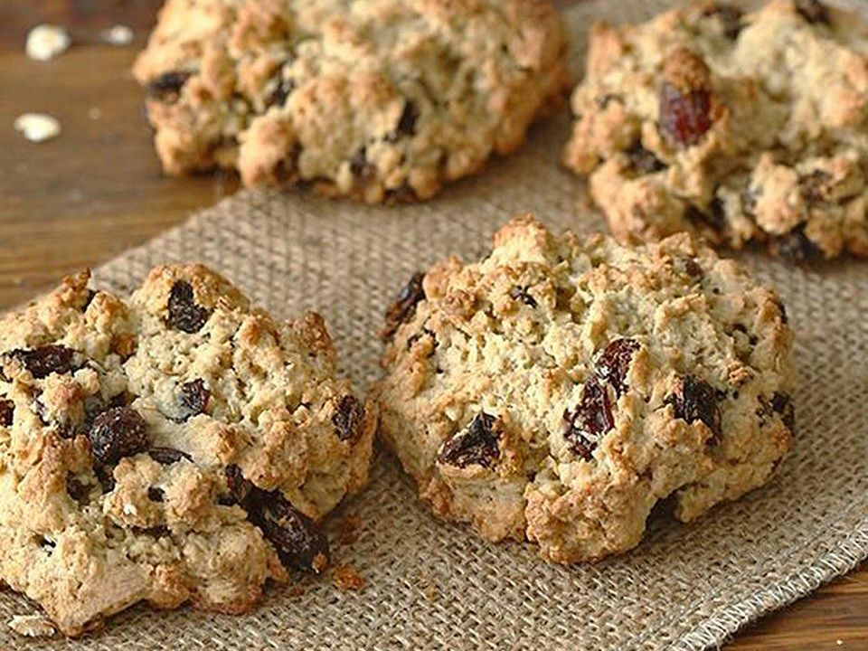

Oatmeal Raisin Cookies

Description
An oatmeal raisin cookie is a type of drop cookie made
from an oatmeal-based dough with raisins. Its ingredients also
typically include flour, sugar, eggs, salt, and spices.
When the cookies were becoming prominent in the
United States in the early 1900s,
they came to be known as a health food because
of the fiber and vitamins from the oatmeal and raisins.
Ingredients
- ¾ cup butter, softened
- ¾ cup white sugar
- ¾ cup packed light brown sugar
- 2 large eggs
- 1 teaspoon vanilla extract
- 1 ¼ cups all-purpose flour
- 1 teaspoon baking soda
- ¾ teaspoon ground cinnamon
- ½ teaspoon salt
- 2 ¾ cups rolled oats
- 1 cup raisins
Instructions
- Gather all ingredients
-
Preheat the oven to 375 degrees F (190 degrees C). Line
two cookie sheets with parchment paper or silicone liners
-
Beat butter, white sugar, and brown sugar in a large bowl until
smooth and creamy. Beat in eggs and vanilla until fluffy.
-
Stir together flour, baking soda, cinnamon, and salt. Gradually beat into the butter mixture.
Stir in oats and raisins. Drop teaspoonfuls of batter onto the prepared cookie sheets.
-
Bake in the preheated oven until golden brown, 8 to 10 minutes, switching racks halfway through.
Remove from the oven and let sit on the cookie sheets for 1 to 2 minutes
before transferring cookies to a wire rack to cool completely.
Go to Top
Back to Main Page